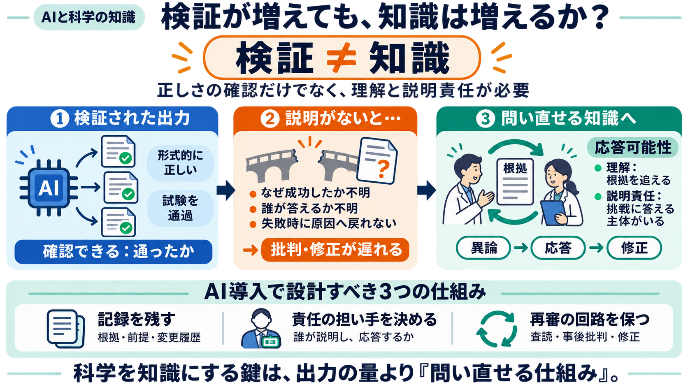

Verification Is Not Knowledge
# Cosmos Institute # Verification Is Not Knowledge ### Science needs more than answers Cosmos Institute and Jessica H…

# Cosmos Institute # Verification Is Not Knowledge ### Science needs more than answers Cosmos Institute and Jessica H…
### Co-authors Matthew Kay Eytan Adar Nicholas Diakopoulos Alex Kale Priyanka Nanayakkara Ziyang Guo Jason Hartline And…
Moreover, the need for verification becomes particularly pressing as AI systems accelerate the production of proposed de…
aided by the use of AI in its mission. This further demonstrates the criticality of what the Fourth Paradigm offers the …
Scientific communities should build the capacity to oversee AI systems used in science and ensure their ethical use for …